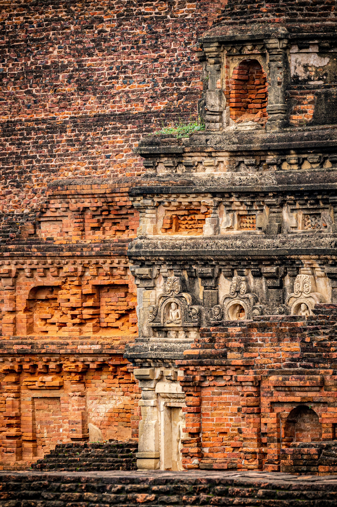
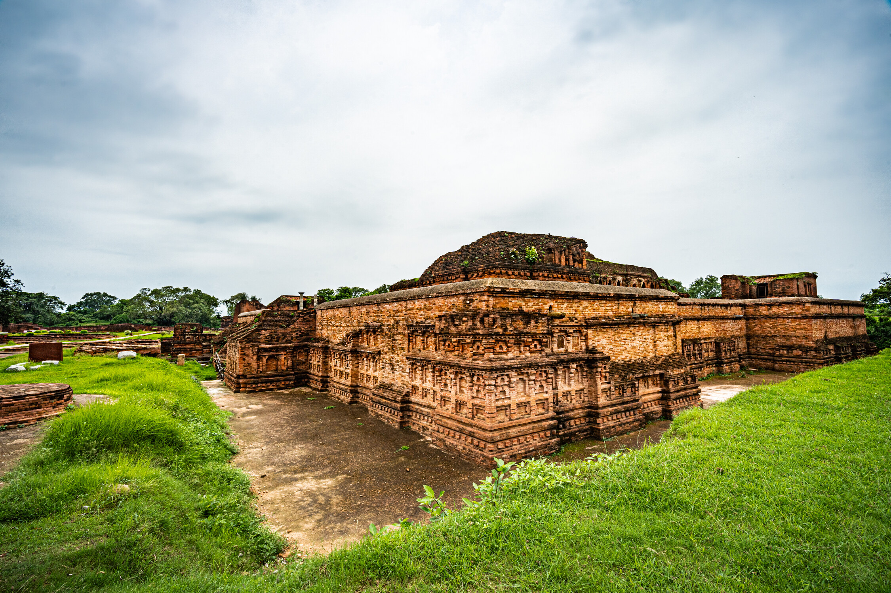
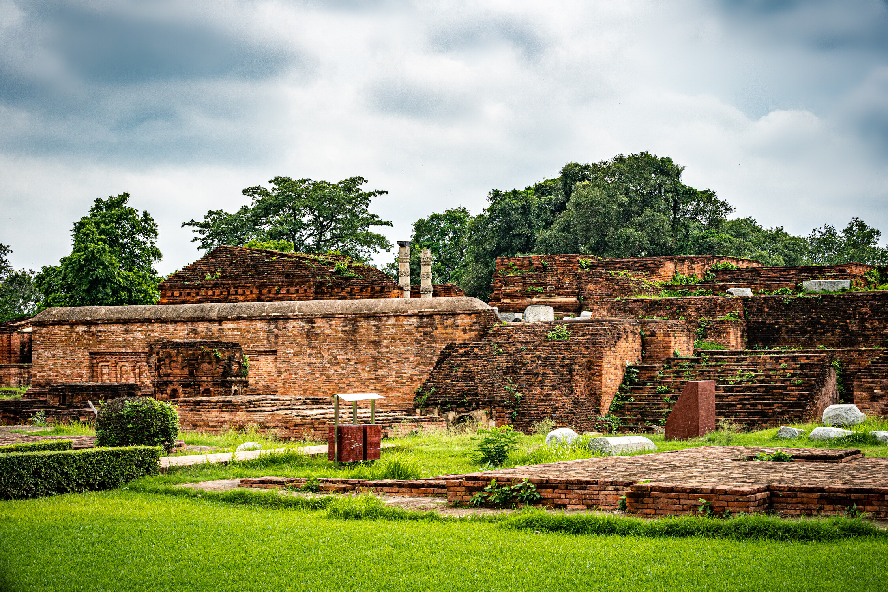

About Nalanda Mahavihara
The Archaeological Site of Nalanda Mahavihara is a UNESCO World Heritage site located in Nalanda District, Bihar. It was the most renowned university in ancient India and attracted scholars from all over the world.
Established in the 5th century AD during the Gupta period, Nalanda University flourished for over 800 years before being destroyed in the 12th century. It was home to over 10,000 students and 2,000 teachers at its peak.
Historical Significance
Nalanda was the first great university in recorded history and set the standard for academic excellence. It played a crucial role in the development of Buddhism, Hinduism, and other Indian philosophical traditions. Many famous scholars, including Aryabhata and Nagarjuna, studied or taught here.
Architecture
The ruins of Nalanda spread over an area of 14 hectares and include impressive brick temples and monasteries. The complex features large lecture halls, residential cells, meditation chambers, and a massive library that was said to contain millions of manuscripts.




Visitor Information
The archaeological site is open to visitors and offers a fascinating glimpse into ancient Indian education and architecture. The on-site museum houses many artifacts discovered during excavations. The best time to visit is from October to March.
← Back to Destinations